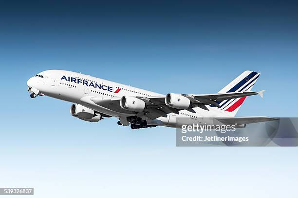
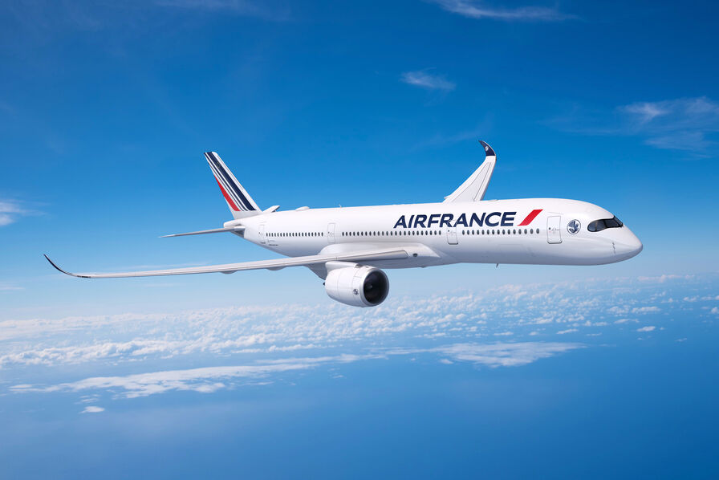

Air France est la compagnie aérienne nationale française, fondée le 30 août 1933.
Ses activités principales sont le transport de passagers, de fret ainsi que la
maintenance et l'entretien des avions.
Air France est une des compagnies qui desservent le plus grand nombre de destinations
dans le monde avec la compagnie Turkish Airlines et possède une des plus grandes
flottes de Boeing 777. En outre, Air France est la seule compagnie aérienne au monde
à avoir utilisé tous les avions de la famille Airbus
(A220, A300a, A310a, A318, A319, A320, A321, A330, A340a, A350, et enfin A380).

La compagnie tricolore a eu également presque tous les avions de Boeing
(B707, B727, B737, B747, B767, B777, B787).
Elle possède également une identitée sonor qui est difusée lors de l'embarquement
dans chaque avion sde sa flotte.
 